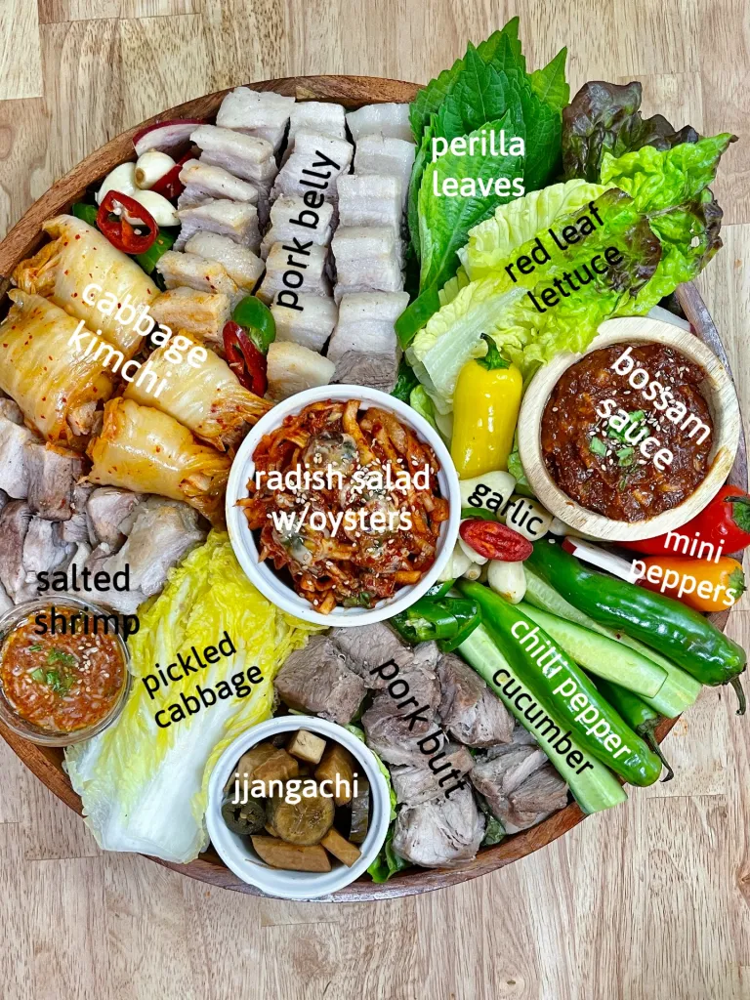
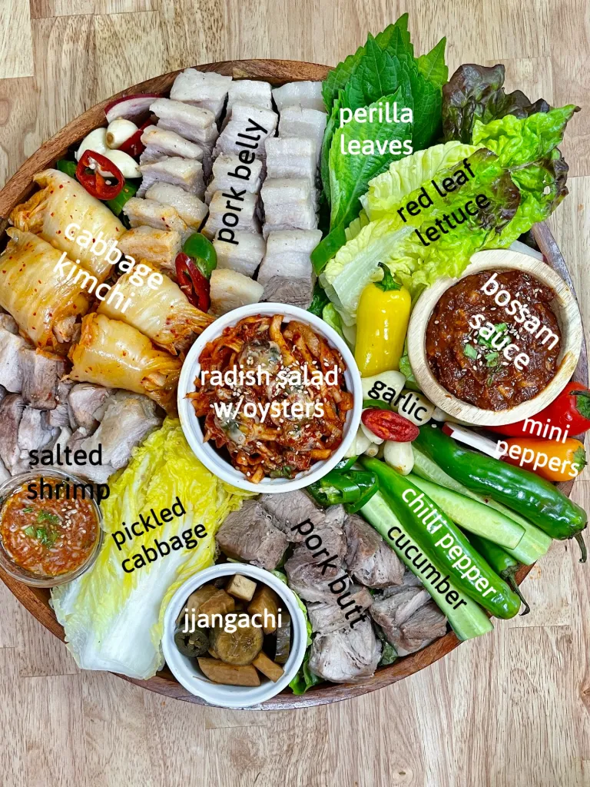

Bossam

About Bossam
Bossam, also known as Korean boiled pork belly, is a staple Korean food that is served with side dishes.
Origins: Bossam originates from the Jolla-Do area of Korea and has origins in more noble classes of Korean history and is one a few dishes that's culinary origins are believed to stretch back to the Joseon era. This dish does take about an hour to prepare, but it is certainly worth the time.
Ingredients (prep time 10 minutes)
The main ingredients needed for Bossam are pork belly (3-inch wide cut of about 2.5 pounds), fermented soybean paste (1.5 tablespoons), and coffee powder (1 teaspoon).
Other ingredients include:
- 1 teaspoon of salt
- enough water or beer to fully cover pork belly
- 1 inch ginger sliced
- 1 teaspoon of pepper
- 1 onion
- 4 large scallions
- 2 bay leaves
- 6 garlic cloves
How to make (takes 1 hour)
Now that all the ingredients are gathered, it is simple to make. This makes enough for 4 people.
- In a large pot, place the 2 whole pork belly slices and cover with water or beer until fully submerged.
- Add 1 tablespoons of salt and pepper along with 2 tablespoons of fermented soybean paste and then mix until the paste has completely dissolved.
- Slice a whole onion into quarters and then place into the pot along with the ginger slices.
- Cut the large scalions in half and add the white parts into the pot along with 6 garlic cloves.
- Add one teaspoon of coffee powder and two bayleaves.
- Bring to a boil and then change the heat to medium and put a lid on it for 45 minutes.
- Check if the pork is fork tender and then slice thinly and enjoy.
- With leftovers, the pork can be sealed and refrigerated for up to a week.
- To reheat, simply microwave for 30 seconds or heat on a pan.


 

Recipe Websites
Korean Bapsang is the first website that I looked at to examine the cooking process of bossam. I enjoyed how this website had clear instructions and the three step process to enjoy bossam made it easy to understand. One thing I did not like about the wbesite was that there was too much going on for a recipe page.
Maangchi is a great website that provides thorough instructions about how to make bossam, but I feel like sometimes that might be a larger con than a pro. The process of boiling pork belly with seasonings is simple and does not need pages of instructions.
The New York Times provides a modern twist to the generational dish by adding more creative twists like sous vide and oven cooking. Though modern twists are interesting, the traditional dish should be preserved for those who want to try the auntenthic version.
Non-Recipe Websites
Bite Toothpaste is a website that I wanted to use to inform my actual design. It has a very simplistic style and displays pictures of the product inna very clear way.
The Scott Snyder website shows how images alone can be used to portray a message or product. The Neuro Gum pictures that he took showcases an advert that uses colors and symmetry to have a positive appeal to the product.
I really enjoy the colors in Christy Jone's website. The calm orange and matte white background go along well and I want to use these colors in my next version of the recipe website.
Revisions made
Added ingredient amount and created clearer instructions.
Specified the amount and weight of the "2 pork belly slices."
Cleaned up the page and made instructions more specific or more concise.
Added more images to make the understanding process easier for the viewer.
Evaluation Google Doc
Created by Joseph Lim